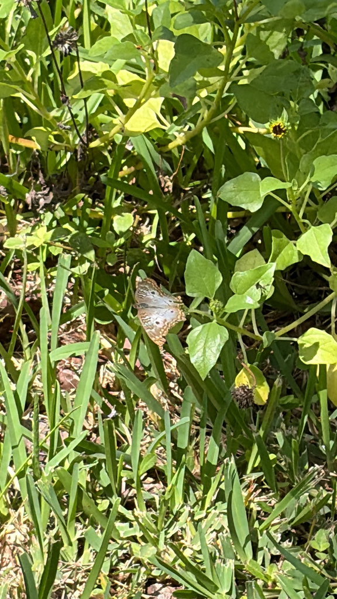

- The white peacock is a pale, almost ghostly butterfly — chalky white with faint tan markings, dark eyespots, and scalloped, orange-edged wings.
- It stays low, flying just above the ground in damp, open places like pond edges, ditches, and wet fields.
- Its caterpillars feed on low, creeping native plants — frogfruit and water hyssop — that grow right along the water's edge.
- Males are territorial, patrolling a small patch of host plants and chasing off rivals and other insects that wander in.
Chalky white with faint light-brown markings.
Scalloped edges trimmed in orange, with small dark eyespots.
Low and close to the ground.
A pale, whitish butterfly flying low over damp, open ground near water, showing orange-trimmed, scalloped wings and small dark spots. Its habit of staying near the ground around pond edges is a good clue.
Caterpillars feed on low native plants, chiefly frogfruit and water hyssop. Adults sip nectar from low-growing flowers such as Spanish needles and frogfruit.
Flying low around the moist edges of the ponds and in damp open ground, especially near frogfruit and other low groundcovers.
Year-round resident, most numerous in the warm months. Look low to the ground near water.
Just watch and enjoy. Low plantings of native frogfruit and water hyssop near water are the best way to invite them in.

- © Ruby Meador (CC-BY-NC), via iNaturalist
- © Maria Escobar (CC-BY-NC), via iNaturalist